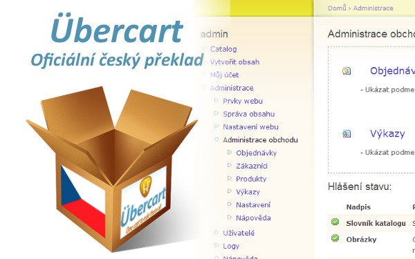
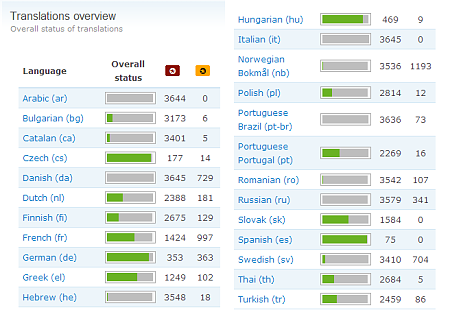

Übercart 1.4 kompletní český překlad
Je to tu! Kompletní 100% český překlad, nového, silného open-source e-shopu plně integrovaného do Drupalu!
Jak avizoval PEpe cca před půl rokem v příspěvku Elektronický obchod Ubercart, již nějaký čas skupina lidí tráví dny a noci tím, že pracuje na překladu tohoto ultimátního e-commerce systému. Nyní po šesti měsících (a teprve po třech měsících od vydání první stable verze Übercartu) je tu konečně kompletní český překlad!
 Něco z historie…PEpe v souvislosti se svým příspěvkem vytvořil na překladatelském serveru l10n.privnet.biz českou překladatelskou skupinu a začalo se pracovat na překladu týmově. V této době obsahoval překlad Übercartu necelých 500 stringů, byl přeložen defakto jen „frontend“, tedy rozhraní pro zákazníky.
Celkem má na tomto serveru překladatelskou základnu 25 překladatelských týmů. Česká skupina byla jedna z prvních (o tom svědčí např poměrně nízké NID naší skupiny ~ 10) a jsme druhou největší skupinou s 60-ti členy. Největší skupinu mají němci se 65 členy, hned za námi jsou maďaři s 55 členy. Nicméně abych byl upřímný, většina lidí z české skupiny se zaregistrovala jen proto, aby si stáhla překlad… ale nevadí :-) I proto vznikl tento balíček – už se nikdo nemusí registrovat, jen aby si stáhnul překlad.
ZásluhyK dnešnímu dni je „skóre“ nejpilnějších překladatelů následující:
- wojtha – 2023 přeložených řetězců
- klauz – 495 přeložených řetězců
- pepe – 450 přeložených řetězců
- zahraj – 323 přeložených řetězců
- ondrach – 206 přeložených řetězců
- apoage – 121 přeložených řetězců
- mysak – 45 přeložených řetězců
- boreg – 23 přeložených řetězců
- vlcakm – 20 přeložených řetězců
Velký dík patří ještě RAkovi za rozjetí a administraci překladatelského serveru l10n.privnet.biz a samozřejmě Ryanovi a Lyleovi z ubercart.org za jejich již dvouletou usilovnou práci na Übecartu.
 Obsah lokalizačního balíčkuČeský languagepack obsahuje dva odlišné formáty překladu a to pro dva různé moduly: I) Locale a II) Autolocale.
Modul Locale je obsažen v jádře Drupalu již po několik verzí, stará se o překlad rozhraní, jednou z jeho hlavních vlastností je možnost importovat soubory s překlady uploadem přes webový formulář.
Proč tedy modul Auto locale import? Tento modul se stará o automatický import překladů ve formě .po souborů k právě zapnutým modulům a pro povolené jazyky v Locate modulu, pokud je tyto moduly mají ve svém /po adresáři, resp. v /translation adresáři pro Drupal 6 a výš. Tím je zabezpečeno pohodlné přidání překladů do tabulky překladů v databázi. Ve světlé budoucnosti 100% přeloženého Drupalu a všech modulů se člověk nebude muset o administraci překladů vůbec starat :-)
VývojPřeklad je sice stoprocentní co do pokrytí, ale ne co do kvality. Místy může být nekozistentní, udržet stejnou terminologii napříč celým e-shopem není snadná věc. Navíc pro spoustu termínů neexistují ekvivaletní české termíny, nebo existují, ale jsou značně kostrbaté. Pokud narazíte na nějakou chybu/nekozistenci, nebo si myslíte, že něco lze přeložit lépe, tak o tom dejte určitě vědět. A úplně nejlepší bude, když se přihlásíte do překladatelského týmu na http://l10n.privnet.biz a pošlete návrh na opravu rovnou k danému stringu :-)
Budoucnost překladu?S Jakubem se snažíme přesvědčit Ryana z Übercartu, že překlady by měly být integrovány přímo do oficiálního vydání Übecartu. Jestli se to povede, bude možná český překlad prvním oficiálním překladem distribuovaný přímo s Übercartem. Držte palce!
PS: Autorem originální ikony krabice je 2shi z deviantart.com

THX
Diky a uznani patri hlave tobe Wojtho! 2023 prelozenych retezcu mluvi za vse… Takze jeste jednou THX a zarivou budoucnost Drupalu s Ubercart v ceskomoravskych luzich a hajich :-)
Skvela praca. Dakujem!
Skvela praca. Dakujem!
Pěkná práce kluci, myslel
Pěkná práce kluci, myslel jsem, že Ubercart zůstane navěky nečeský :-)
Nevíte, jak to vypadá s vývojem Ubercartu pro Drupal 6? Samotný balík je sice přeportován, ale pomocné moduly (TAPIr, uBrowser, …) jsou stále zastaralé.
Muj velky hlubokosklon vsem
Muj velky hlubokosklon vsem kdoz si dali tu praci a cely Ubercart prelozili do prijemnejsiho a hlavne matreskeho jakzyku. Diky tomu to prekladu jsem i ja tupa hlava pochopil souvyslosti celeho shopu a mohl jej (ted v testu) nasadit na svuj komunitni web.
Vsem moc diky za snahu a veskerou praci :-) a predevsim wojthovi i za jeho rady …
Návrh na diplom za skvělou práci
Velký dík wojthovi a všem ostatním překladatelům, začínám testovat na D6. Má někdo zkušenost a odvahu nasadit Ubercart s D6? Fakt hodně užitečné práce, velký dík.
Na drupal 6 bych zatim uc
Na drupal 6 bych zatim uc nedoporucoval… Rozhodne ne do produkcniho nasazeni… Nicmene portovani pro 6 je ted pokud vim priorita cislo jedna… takze myslim se se brzo dockame… ;-)
Tak tak
Stačí se podívat do issues … bugama pro 6.x-dev se to jen hemží.
Navíc je to teprve počátek 2.0 verze (před dvěma týdny teprve dokončili portování z 5 na 6), takže tam ještě budou zásadní změny v kódu, což nepochybně způsobí další chyby…
Dle Übercarťáků bude vývoj následující 1. verze = základ, 2. verze = optimalizace a použitelnost, 3. verze = nové „features“. Nejsem si 100% jistý, ale mám pocit, že Ryan na představení Übercartu v Szegedu říkal, že 2. verze bude pro Drupal 6 a verze 3 bude až pro Drupal 7. Což dává celkem logiku, během půl roku by Drupal 7 mohl vstoupit do „code freeze“ fáze.
Ze zaměření verzí mi vychází, že nebude zas tak velký rozdíl mezi verzemi 1 a 2, ale spíš mezi verzema 2 a 3. Jestli někdo potřebuje rozjet shop na Drupalu, nezbude mu dle mého odhadu v příštím půl roce nic jiného než sáhnout ještě pro Drupal 5 & Ubercart 1.
Rozjetí něčeho funkčního na 6.x-2-dev verzi tedy ještě dlouho nebude možné, je třeba počkat min. na alpha verzi. Teď je to fakt jen verze jen pro lidi, co se hrabou v kódu a pomáhají s vývojem …
Navíc jak zmínil bobík ^^^^ neexistují zatím ani porty pro moduly, na kterých je Übercart závislý.
aha
aha, takže některé věci nejsou mojí blbostí, ale je to vlastnost? nějak se mi nedaří aby se u produktů zobrazovaly obrázky :(, ale co je to zatím jen návrh. uvidím, jak to bude pokračovat – každopádně se před Vaší prací klaním až k zemi
Übercart toho umí už
Übercart toho umí už nyní celkem dost. Pokrývá vše co by měl e-shop umět. Jaké „featury“ se chystají do verze 3 netuším.
Add nefunkční Obrázky:
Pokud nemáte nainstalované a zapnuté potřebné moduly (viz Recommended Modules) , na hlavní stránce administrace e-shopu je zobrazena tato hláška:
„Chcete-li automaticky nastavit základní podporu obrázků, zapněte následující moduly: CCK Content, CCK Image Field a Imagecache. Tato akce není povinná.“
Poté co moduly zapnete se objeví na stejném místě
"Klikněte zde pro automatické nastavení následujících položek jádra podpory obrázků: …
Poté, co kliknete na odkaz, vše (CCK, Imagecache) se automaticky nastaví.
„Ubercart automaticky nastavil podporu obrázků produktu.“
A je to. Pokud pro procházení produktů používáte vestavěný Katalog, vše je již nastaveno a obrázky se ukazují tam kde mají … Velikost a další akce s obrázky můžete nakonfigurovat v nastavení imagecache v automaticky vygenerovaných profilech („product“, „product_list“, „uc_thumbnail“, „uc_category“, „cart“).
PS: pro imagecache je nutné mít fungující Clean URL
to mám, obrázek je
to mám, obrázek je u produktu i nahranej – když dám v administraci upravit produkt, tak tam můžu obrázek nahrát, smazat, zobrazí se když na něj kliknu, ale u produktu jako takového se prostě nezobrazí –
„Ubercart automaticky nastavil podporu obrázků produktu.“ tohle proběhlo a nic …
jediná chyba, co se mi ukazuje je tahle:
warning: in_array() [function.in-array]: Wrong datatype for second argument in /hosting/new-krobuzon.cz/skola/modules/filefield/filefield.module on line 289.což by mohlo být ono, jenže já s ní nejsem schopnej nic udělat
jedná se o tenhle prototyp stránek: http://www.skola.new-krobuzon.cz/
místo obrázku se zobrazí jen svislá čárka
nastavení Clean URL ted nemužu najít :(
jinak před Übercartem se klaním až k zemi a dík za návod – třeba pomůže. hledám i v oprávněních, ale fak se nějak nemůžu pohnout :(
No tak můžou to být dvě
No tak můžou to být dvě věci… Můžou to být nekompatibilní verze modulů. Zkontrolujte, zda tam máte ty verze doporučené na stránce Übercartu.
No a za druhé máte vypnuté ty Clean url (v URL se Vám zobrazuje „?q=“). Můžete to zapnout v „Nastavení webu/Čistá URL“, URL „admin/settings/clean-urls“. Občas je nutné upravit Apache mod_rewrite v .htaccess souboru
aha: Váš webový server
aha:
Váš webový server nepodporuje tuto funkci. Více informací o Čistých URLbudu hledat tady
bezva, stačilo
bezva, stačilo odkomentovat:
RewriteBase /v
.htaccesa už to šlape
Apache mode
Dobrý den, prosím Vás můžete mi napsat, kde mohu upravit Apache mod_rewrite v .htaccess souboru. Jaksi to nemůžu nikde najít, ubercart mam v cestine. Také mi nejde čistá url povolit. Server to ale podporuje, tam uz to zjistene mam. Ješte jsem se chtela zeptat, zda je nejaka moznost nastaveni vice druhu plateb v ubercart, jsem totiz laik a zkousenim jsem neprisla na dalsi moznosti nez je šek, dobírka, ostatní. Nebo alespoň moci doplnit neco k platbě ostatní.
Děkuji Kubešová Ivana
Je mozne ze v .htaccess
Je mozne ze v .htaccess treba odpoznamkovat (zmazat #) RewriteBase / (alebo RewriteBase /moja/cesta/k/webu) – potom by malo ist ciste url zapnut.
Dekuji, ja ale vubec nevim
Dekuji, ja ale vubec nevim kde jako to v. htaccess je. Proste tohle bych potrebovala vedet. díky moc Ivana Kubešová www.zelenepotraviny.com
Skoro nakonci suboru
Skoro nakonci suboru
.htaccessktory sa nachadza v hlavnom adresari Drupalu, staci mat oci otvorene:Inak ak ten .htaccess nevidiet je mozne ze FTP ma zapnute nezobrazovat skryte subory (subory zacinajuce bodkou sa povazuju za skryte).
Dekuju, ale prominte, já
Dekuju, ale prominte, já jsem totiž, ale opravdu uplny laik, prostě ani nevím kde má drupal adresář. Já snad ani zádný drupal nainstalovaný v PC nemám. Já jsem si ho nikdy neinstalovala, prostě firma mi hodila stránky na drupal a ubercart a já s tím nic neměla, jen pracuju online na nastavování. Tak se omlouvám a prosím o pochopení a popř. ještě malé vysvětlení. Takto jak jste mi to napsal to chápu, ale prostě nevím kde mám hledat adresář drupalu, když ho v PC nemám. Díky moc Kubešová
V tom pripade byste mela
V tom pripade byste mela vysvetlit firme, ze nemate dostatek prostredku na splneni prace a ze by spravnou konfiguraci mel provest ten, kdo Drupal instaloval. Pote to nechat na tom cloveku, nebo najmout odborniky.
Drupal6
Pokud jsem pochopil, wojtha doporučuje raději D6 vynechat, web nechat v D5 a čekat až na D7. PEpe říká, že na portovani pro D6 se pracuje, to bude pravděpodně asi dřív než pro D7. Myslíte, že Übercart pro D6 bude podstatně dřív nebo D7 bude krátce po D6?
Neříkám D6 vynechat, ale
Neříkám D6 vynechat, ale nesnažit se zprovozňovat Übercart dokud nebude verze 2 alespoň trochu stabilní (tj Beta nebo RC verze).
Nicméně až bude verze 2 pro D6 stabilní, tak jí určitě použijte :-) Budete mít cca o rok a půl delší podporu od Drupal.org.
D7 tu bude nejdřív v polovině 2009 a jelikož tam bude spousta podstatných změn (např. zcela nový objektový databázový layer), lze očekávat, že portování všech modulů potrvá o něco déle než je obvyklé …
Übercart a DPH
Ahoj,
umí Übercart pracovat s DPH (jako cena s DPH nebo bez DPH)?
Popřípadě umí to nějaký voně šiřitelný e-shop nebo doporučte nějaký i placený (ale kvalitní) e-shop.
Předem díííííííííííky
Hawkey :)
DPH, akcni cena
Zdravim, prace s dph me taky zajima, a navic bych potreboval poradit, jak nad seznam produktu dostat filtrovaci polozky (zaskrtnout si vypsani pouze urcitych vyrobcu a urcitych druhu zbozi), poradite? Diky
Nesouvisi to s prekladem
Nesouvisi to s prekladem ubercartu, pokud mate konkretni problem, vytvorte na nej nove tema prsoim.
Ubercart 6.x-2.0beta4
Dobry den, chci se zeptat, jak to v tuhle chvili vypada s pekladem pro Ubercart D6? Mam eshop na D5 jeste ze starsi doby s vlastnim ‚polo prekladem‘ a chci ho prevest na D6. Diky za odpoved.
Asi špatně, já nic nenašel.
Asi špatně, já nic nenašel. Stáhl jsem aktuální verzi 6.x-2.3 a celou jsem si ji přeložil sám. Hledal jsem češtinu celý den… mohl jsem to rovnou přeložit hned.
Kontakt
Ahoj potřeboval bych kontakt na někoho kdo dělal překlad pro ubercart.Potřebuji poradtit jak do překladu dodat dvě pole ohledně DPH Diky Martin
Poslat nový komentář